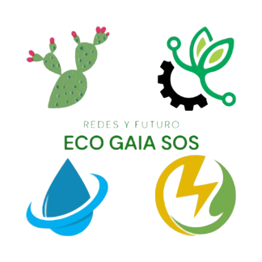

EcoGaiaSOS — Plataforma de impacto ambiental2024 – Presente · CDMX
- Desarrollo e implementación de la plataforma web para gestión y difusión de convocatorias y proyectos ambientales.
- Responsable de la organización de datos, visualización y soporte a actores locales.
Sistema IoT para techos verdes — Proyecto de tesis
2023 – 2025 · Validado en campo
- Diseño y despliegue de sistema de monitoreo térmico autónomo con ESP32, sensores y alimentación solar.
- Desarrollo de pipeline de datos y dashboard para la validación de reducción térmica en techos verdes.